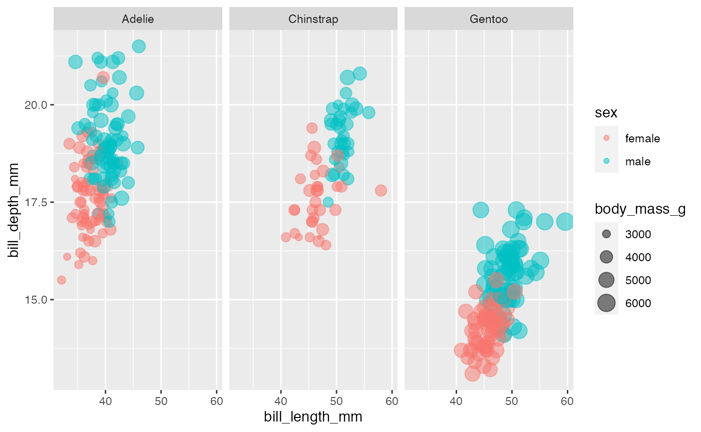
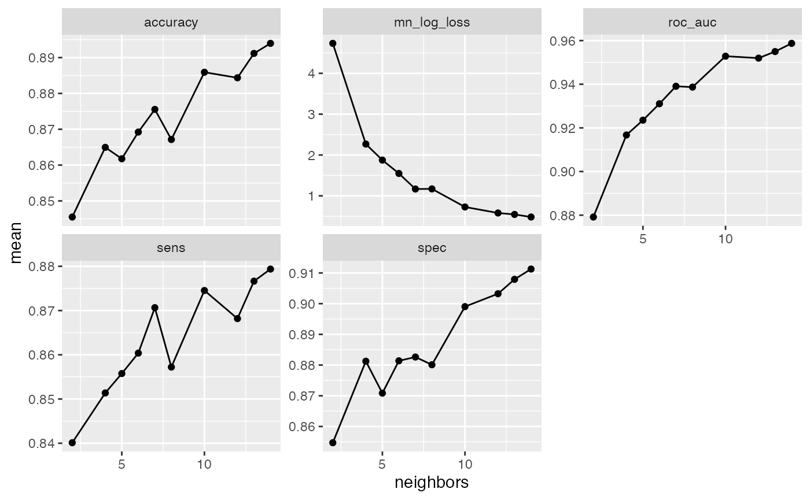
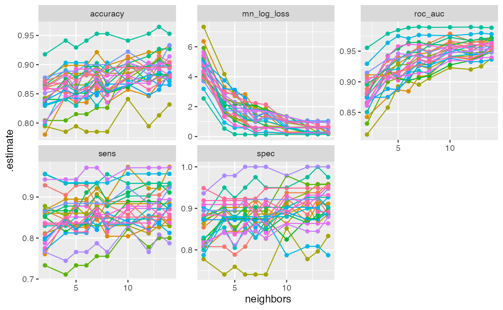
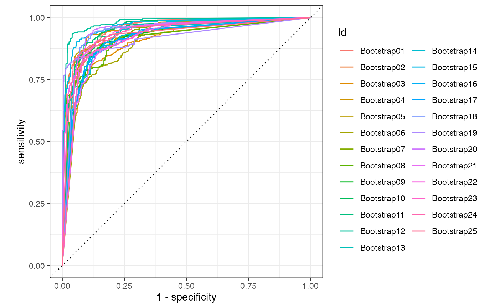
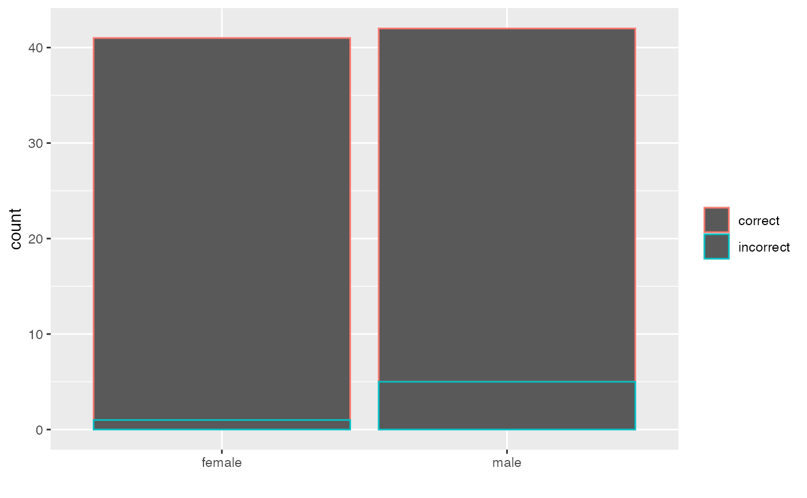

yardstick.Rmd
library(tidymodels)
library(usemodels)
library(palmerpenguins)
library(broom)
library(mariatidymodels)Take the penguins dataset; this dataset has variables (bill_length, bill_depth, flipper_length etc) for 3 species of penguins. These variables really are what are used to classify penguins into species. In the `penguins` dataset, there is also information about sex. Let’s plot that:
penguins %>%
filter(!is.na(sex)) %>%
ggplot(aes(bill_length_mm, bill_depth_mm, color = sex, size = body_mass_g)) +
geom_point(alpha = 0.5) +
facet_wrap(~species)
It looks like females then to have smaller bill length and depth. And it seems like body weigh is more specific for the specie ( i.e. Gentoo penguins look heavier). We could build a classification model that predict whether a penguin is female or male using the other from the other 5 body characteristics in the dataset. Then we can calculate several assessment measurements with yardstick.
set.seed(123)
penguin_split <- initial_split(penguins_df, strata = sex)
penguin_train <- training(penguin_split)
penguin_test <- testing(penguin_split)
k_folds <- bootstraps(penguin_train)usemodels gives you such a great boilerplate to customise models. For instance, we can use and customize the output model.
use_kknn(sex ~ ., data = penguin_train)
#> kknn_recipe <-
#> recipe(formula = sex ~ ., data = penguin_train) %>%
#> step_novel(all_nominal(), -all_outcomes()) %>%
#> step_dummy(all_nominal(), -all_outcomes()) %>%
#> step_zv(all_predictors()) %>%
#> step_normalize(all_predictors(), -all_nominal())
#>
#> kknn_spec <-
#> nearest_neighbor(neighbors = tune(), weight_func = tune()) %>%
#> set_mode("classification") %>%
#> set_engine("kknn")
#>
#> kknn_workflow <-
#> workflow() %>%
#> add_recipe(kknn_recipe) %>%
#> add_model(kknn_spec)
#>
#> set.seed(48449)
#> kknn_tune <-
#> tune_grid(kknn_workflow, resamples = stop("add your rsample object"), grid = stop("add number of candidate points"))I want to be able to set metrics of the model performance, and be able to tune model parameters, so I am going to incorporate/add that flavor into the model.
kknn_recipe <-
recipe(formula = sex ~ ., data = penguin_train) %>%
step_novel(all_nominal(), -all_outcomes()) %>%
step_dummy(all_nominal(), -all_outcomes()) %>%
step_zv(all_predictors()) %>%
step_normalize(all_predictors(), -all_nominal())
#added flavour
kknn_recipe %>% prep() %>% juice() %>% summary()
#> bill_length_mm bill_depth_mm flipper_length_mm body_mass_g
#> Min. :-1.94709 Min. :-2.0873 Min. :-1.9229 Min. :-1.6757
#> 1st Qu.:-0.84678 1st Qu.:-0.9056 1st Qu.:-0.7661 1st Qu.:-0.7985
#> Median : 0.06414 Median : 0.1490 Median :-0.2600 Median :-0.2346
#> Mean : 0.00000 Mean : 0.0000 Mean : 0.0000 Mean : 0.0000
#> 3rd Qu.: 0.86683 3rd Qu.: 0.7589 3rd Qu.: 0.8968 3rd Qu.: 0.7053
#> Max. : 2.54437 Max. : 2.1820 Max. : 2.1982 Max. : 2.6477
#> sex species_Chinstrap species_Gentoo
#> female:124 Min. :-0.5052 Min. :-0.7227
#> male :126 1st Qu.:-0.5052 1st Qu.:-0.7227
#> Median :-0.5052 Median :-0.7227
#> Mean : 0.0000 Mean : 0.0000
#> 3rd Qu.:-0.5052 3rd Qu.: 1.3782
#> Max. : 1.9714 Max. : 1.3782
#added flavour
c_metrics <- yardstick::metric_set(accuracy,
sens, spec,
roc_auc, mn_log_loss)
#added flavour
model_control <- tune::control_grid(save_pred = TRUE)
#added flavour
cores <- parallel::detectCores()
cores
#> [1] 4
kknn_spec <-
nearest_neighbor(neighbors = tune(), weight_func = tune()) %>%
set_mode("classification") %>%
set_engine("kknn")
knn_grid <- dials::grid_regular(parameters(kknn_spec), levels = 5)
kknn_workflow <-
workflow() %>%
add_recipe(kknn_recipe) %>%
add_model(kknn_spec)
set.seed(40477)
# kknn_tune <-tune_grid(kknn_workflow, resamples = , grid = )
# Changed flavour
# Lets create our own tune instead
doParallel::registerDoParallel()
knn_tune <- tune_grid(
kknn_spec,
kknn_recipe,
resamples = k_folds,
control = model_control,
metrics = c_metrics
)
#>
#> Attaching package: 'rlang'
#> The following objects are masked from 'package:purrr':
#>
#> %@%, as_function, flatten, flatten_chr, flatten_dbl, flatten_int,
#> flatten_lgl, flatten_raw, invoke, list_along, modify, prepend,
#> splice
#>
#> Attaching package: 'vctrs'
#> The following object is masked from 'package:tibble':
#>
#> data_frame
#> The following object is masked from 'package:dplyr':
#>
#> data_frameI wrote this as a function which returns all the model parameters called customised_model_yardstick
pesonalised_model<-customised_model_yardstick()A lot of information is hold in the output of that function
names(pesonalised_model)
#> [1] "recipe" "metrics" "control" "spec" "grid" "workflow" "tune"For instance we can have a look at the specified recipe
pesonalised_model$recipe
#> Data Recipe
#>
#> Inputs:
#>
#> role #variables
#> outcome 1
#> predictor 5
#>
#> Operations:
#>
#> Novel factor level assignment for all_nominal(), -all_outcomes()
#> Dummy variables from all_nominal(), -all_outcomes()
#> Zero variance filter on all_predictors()
#> Centering and scaling for all_predictors(), -all_nominal()We can visualise how the model performs for all the defined metric functions
knn_tune %>%
tune::collect_metrics() %>%
ggplot(aes(x = neighbors, y = mean)) +
geom_point() +
geom_line() +
facet_wrap(~.metric, scales = "free_y")
As we can see, accuracy, roc_auc, sensitivity and specificity increase with the number of neighbors. On the contrary, loss decreases with the number of neighbors.
We can visualise the variance between each cross-validation folds (partition dataset)
knn_tune %>%
select(id, .metrics) %>%
unnest(.metrics) %>%
ggplot(aes(x = neighbors, y = .estimate, color = id)) +
geom_point() +
geom_line() +
facet_wrap(~.metric, scales = "free_y") +
theme(legend.position = "none")
We see that there is not much stability for sensitivity and specificity.
A confusion matrix is a summary of prediction results on a classification problem. We can calculated with the yardstick function conf_mat.
c_data_metric <- knn_tune %>%
collect_predictions() %>%
mutate(pred = if_else(.pred_female >= .5,
"female", "male"),
pred = as.factor(pred))
c_data_metric %>%
yardstick::conf_mat(sex, pred)
#> Truth
#> Prediction female male
#> female 9909 1343
#> male 1571 10117
c_data_metric %>%
yardstick::conf_mat(sex, pred) ->cmWe can get all the estimates for our confusion metric
c_data_metric %>%
yardstick::conf_mat(sex, pred) %>%
summary()
#> # A tibble: 13 x 3
#> .metric .estimator .estimate
#> <chr> <chr> <dbl>
#> 1 accuracy binary 0.873
#> 2 kap binary 0.746
#> 3 sens binary 0.863
#> 4 spec binary 0.883
#> 5 ppv binary 0.881
#> 6 npv binary 0.866
#> 7 mcc binary 0.746
#> 8 j_index binary 0.746
#> 9 bal_accuracy binary 0.873
#> 10 detection_prevalence binary 0.490
#> 11 precision binary 0.881
#> 12 recall binary 0.863
#> 13 f_meas binary 0.872And we can have a tidy version of our confusion matrix
broom::tidy(cm)
#> # A tibble: 4 x 2
#> name value
#> <chr> <int>
#> 1 cell_1_1 9909
#> 2 cell_2_1 1571
#> 3 cell_1_2 1343
#> 4 cell_2_2 10117In the Wikipedia page, we can see that what each term measures.
Accuracy is the fraction of predictions the model got right. misleading results if the data set is unbalanced. c_data_metric %>% accuracy(sex, pred)
c_data_metric %>%
accuracy(sex, pred)
#> # A tibble: 1 x 3
#> .metric .estimator .estimate
#> <chr> <chr> <dbl>
#> 1 accuracy binary 0.873
(tidy(cm)$value[1]+tidy(cm)$value[4])/sum(tidy(cm)$value)
#> [1] 0.872973Sensitivy looks at how sensitive models are to False Negatives
c_data_metric %>%
sens(sex, pred)
#> # A tibble: 1 x 3
#> .metric .estimator .estimate
#> <chr> <chr> <dbl>
#> 1 sens binary 0.863
(tidy(cm)$value[1])/(tidy(cm)$value[1]+tidy(cm)$value[2])
#> [1] 0.86315333. Precision
Precision measures how sensitive model is to False Positives
c_data_metric %>%
ppv(sex, pred)
#> # A tibble: 1 x 3
#> .metric .estimator .estimate
#> <chr> <chr> <dbl>
#> 1 ppv binary 0.881
(tidy(cm)$value[1])/(tidy(cm)$value[1]+tidy(cm)$value[3])
#> [1] 0.88064344. F1 Score
F1 measures the harmonic average of the precision and recall.
c_data_metric %>%
f_meas(sex,.pred_class)
#> # A tibble: 1 x 3
#> .metric .estimator .estimate
#> <chr> <chr> <dbl>
#> 1 f_meas binary 0.872We can plot the roc curves for the models
knn_tune %>% collect_predictions() %>%
group_by(id) %>%
roc_curve(sex, .pred_female) %>%
autoplot()
We can see what model have us the best roc_auc
knn_tune %>% tune::select_best(metric="roc_auc")
#> # A tibble: 1 x 3
#> neighbors weight_func .config
#> <int> <chr> <chr>
#> 1 14 gaussian Preprocessor1_Model0414 neighbors has best roc auc score, so we can add that into the model
knn_model <- nearest_neighbor(neighbors =14) %>%
set_mode("classification") %>%
set_engine("kknn")We can actually add the final model into a workflow and add the recipe into that workflow as well
final_model <- workflow() %>%
add_model(knn_model) %>%
add_recipe(kknn_recipe)So after determining the best model, the final fit on the entire training set is needed; we can do that with last_fit.
final_res <- tune::last_fit(final_model, penguin_split)We can see how our model will predict on our test unseen data.
final_res %>%
tune::collect_predictions() %>%
mutate(correct = case_when( sex == .pred_class ~ "correct", TRUE ~ "incorrect" )) %>%
bind_cols(penguin_test) %>%
ggplot(aes(sex...14, color=correct)) +
geom_bar() + labs(color = NULL) + xlab("")
#> New names:
#> * sex -> sex...6
#> * sex -> sex...14